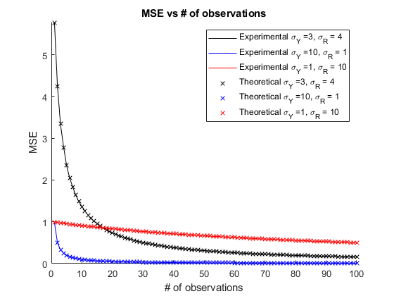

clc;
clear;
close all;
n = 1e5;
Y_bounds = [-1 1];
W_bounds = [-2 2];
edges_mmse = [-3, -1, 1, 3];
MSE_mmse_correct = 1/4;
MSE_llse_correct = 4/15;
[Y_mmse, sigma_2_mmse, Y_llse, sigma_2_llse] = MMSE_LLSE_attempt(Y_bounds, W_bounds, edges_mmse, n, 1);
type = ["MMSE"; "LMSE"];
theoreticalMSE = [MSE_mmse_correct; MSE_llse_correct];
calculatedMSE = [sigma_2_mmse; sigma_2_llse];
table_mse = table(type, theoreticalMSE, calculatedMSE)
table_mse =
2×3 table
type theoreticalMSE calculatedMSE
______ ______________ _____________
"MMSE" 0.25 0.25034
"LMSE" 0.26667 0.2666
sigmay1 = 3;
sigmar1 = 4;
sigmay2 = 10;
sigmar2 = 1;
sigmay3 = 1;
sigmar3 = 10;
rangeforobserv = 100;
Legend_str1 = "Experimental \sigma_Y =" + sigmay1 + ", \sigma_R = "+ sigmar1;
Legend_str2 = "Experimental \sigma_Y =" + sigmay2 + ", \sigma_R = "+ sigmar2;
Legend_str3 = "Experimental \sigma_Y =" + sigmay3 + ", \sigma_R = "+ sigmar3;
Legend_str4 = "Theoretical \sigma_Y =" + sigmay1 + ", \sigma_R = "+ sigmar1;
Legend_str5 = "Theoretical \sigma_Y =" + sigmay2 + ", \sigma_R = "+ sigmar2;
Legend_str6 = "Theoretical \sigma_Y =" + sigmay3 + ", \sigma_R = "+ sigmar3;
[MSE_set1, theoreticalMSE_set1] = Observances(sigmay1, sigmar1, n, rangeforobserv);
[MSE_set2, theoreticalMSE_set2] = Observances(sigmay2, sigmar2, n, rangeforobserv);
[MSE_set3, theoreticalMSE_set3] = Observances(sigmay3, sigmar3, n, rangeforobserv);
figure;
hold on;
plot(1:rangeforobserv, MSE_set1 , 'k');
plot(1:rangeforobserv, MSE_set2, 'b');
plot(1:rangeforobserv, MSE_set3, 'r');
plot(1:rangeforobserv, theoreticalMSE_set1, 'kx');
plot(1:rangeforobserv, theoreticalMSE_set2,'bx');
plot(1:rangeforobserv, theoreticalMSE_set3, 'rx');
hold off;
title("MSE vs # of observations");
xlabel("# of observations");
ylabel("MSE");
ylim([0 inf]);
xlim([0 inf]);
legend(Legend_str1, Legend_str2, Legend_str3, Legend_str4, Legend_str5, Legend_str6 );
